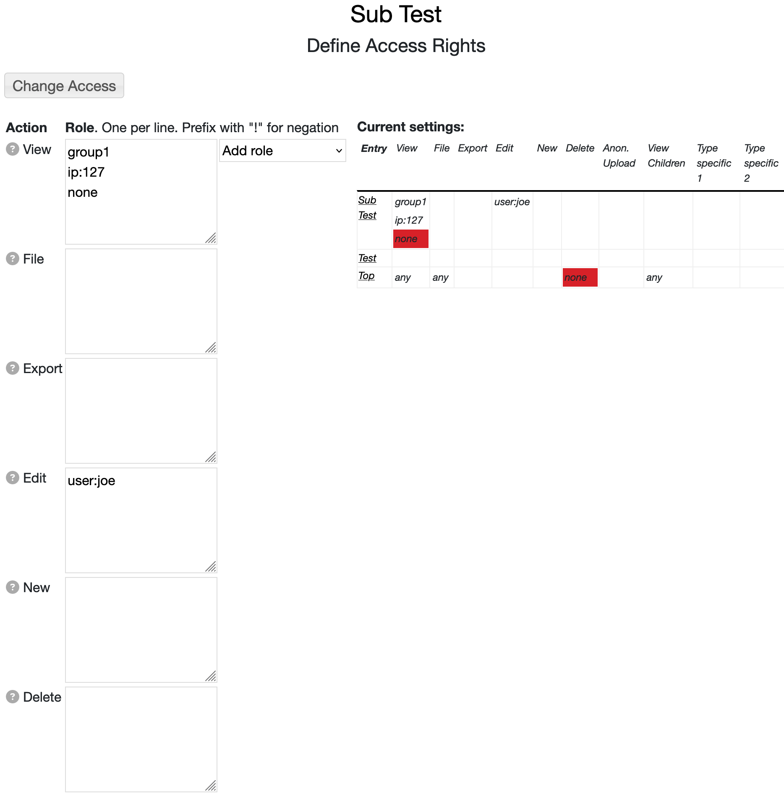

<%nochildlist%>
You can define access control settings under the "Edit -> Access" menu for an entry.
Image 1: Entry Access Control
Note: after setting access (e.g., creating a private space) it is best to log out (or user another browser)
and check if the access is set to what you think it is.
The access control mechanism in RAMADDA is centered around a set of actions (e.g., viewing, new, edit)
and a set of user roles that have permissions to do those actions.
On the left of this form lists each of the actions. For each action there
is a field where you can enter any number of user roles (one per line).
Note: Access control settings have no effect on RAMADDA site administrators. They can do anything.
On the right shows a summary table for the particular entry we are viewing. This shows the access control
settings for all of the ancestor folders of the entry and allows the user to see just what access settings
are applicable to the entry.
To see if a given user has the ability to do a particular action for a particular entry RAMADDA looks
at the permissions for the entry.
- If there are no permissions defined then the parent entry is recursively checked.
- If the user matches one of the roles then permission is granted.
- If there is a specific denial of permission (e.g, "none") then permission is not granted.
- If nothing matches then, by default, permission is not granted. However, the permissions
of the parent are checked if there is a special role "inherit" defined. Also, if the RAMADDA
repository has the property ramadda.auth.stopatfirstrole=false set to false then the parent
is always checked.
- This process continues to the top most entry which has a set of default permissions.
In the example shown above any user in the role "group1" can view anything under the Parent Folder.
No other user can view the Parent Folder because of the "none" specified.
Along with the view access, the user "joe" can also edit the Parent Folder and any entry under
the Parent Folder.
Here are other examples:
:h2: Roles
Each access type can contain any number of roles (one per line).
- Special roles
- any - this is a special role and says that anyone can do the action.
- none - nobody (except admins) can do the action.
- user - any logged in user
- anonymous - the user is not logged in
- guest - the user is a guest user
- Assigned user roles - All users can have one or more roles. This is set by the site administrator
when editing the user. They are just string names. For example, you might have the roles "group1" and
"group2". If you wanted to grant access to "group1" you would just enter:
group1
If you wanted to grant access to users in either group1 or group2 you would enter:
group1
group2
- Self identity role - If you enter a role in the form as user:someuserid this grants
access to that specific user. So, if you wanted to give "joe" access to something enter:
user:joe
- ip:ip address - This format grants access to incoming requests with the given ip address or ip address suffix.
For example, the following would grant access to any request coming from any IP address that starts with 128.117
ip:128.117
- !some role - Prefixing a role with "!" is a way to deny specific access to a user, role, or ip address.
For example, the following would deny access to any request coming from any IP address that starts with 128.117:
!ip:128.117
Say you want to grant access to user "joe" but deny access to user "jim". You would do:
user:joe
!user:jim
:h2: Access Types
The different access types are:
{kind=link}